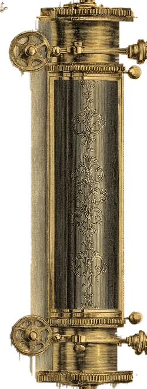
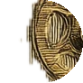

I’M NOT THROWINGAWAY MY SHOT
本作品是非商业的粉丝创作，与音乐剧《汉密尔顿》官方无关。《Hamilton》词曲 Lin-Manuel Miranda，版权归原权利人所有。网页里的歌通过 Spotify 官方播放器播放（2015 百老汇原卡司录音），没有登录 Spotify 时只能听一小段预览。如权利人认为不妥，联系后会立即移除。
This is a non-commercial fan project and is not affiliated with the official production of Hamilton. Book, music and lyrics by Lin-Manuel Miranda; all rights belong to their respective owners. Songs play through Spotify's official embedded player (Original Broadway Cast Recording, 2015); without a Spotify login only a short preview plays. If you are a rights holder and object, please contact us and it will be removed promptly.
The note is based on public-domain images of the series 2021 $10 Federal Reserve Note (Wikimedia Commons). Serial numbers and signatures are removed and replaced with “MIAOSICAL FAN”. This is not currency.